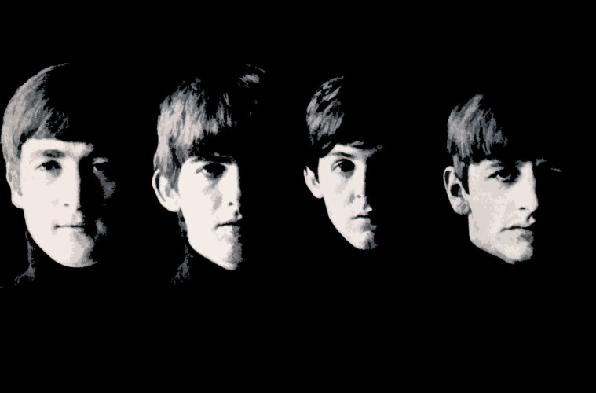
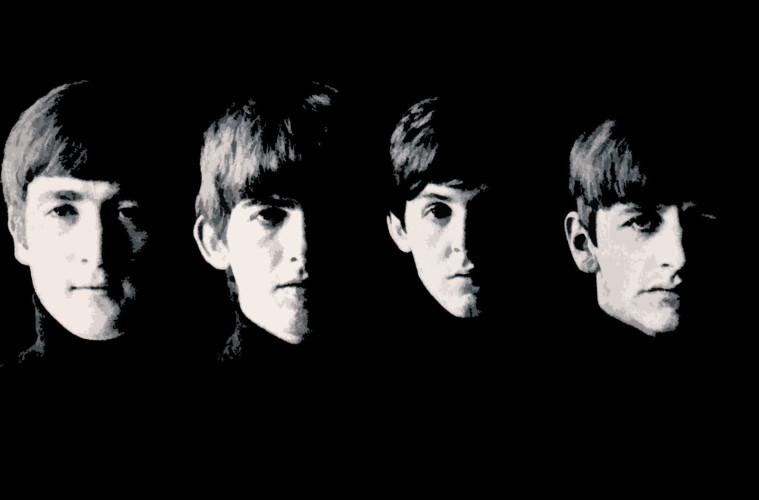

En la década de los '50, en Liverpool, Inglatera, dominaba el skiffle (estilo musical derivado del jazz. en el cual se puede tocar con lo que se tenga más a mano, como por ejemplo latas, cubos, etc.
John Lennon había formado, en el colegio en el que se encontraba (Quarry Bank Grammar), una banda llamada "The Quarrymen", formada por algunos compañeros suyos. Interpretaban versiones de Elvis Presley y de otros artistas ya consagrados. Más tarde Lennon conoció a Paul McCartney gracias a un amigo común, Ivan Vaughan, el cual los presentó al finalizar un recital que dieron "The Quarrymen" el 6 de julio de 1957. A partir de entonces, John Lennon y Paul McCartney se hicieron amigos inseparables.
Por ser John el lider del grupo, decidió que Paul se uniera a ellos, no sólo por ser su amigo, sino también porque tocaba muy bien la guitarra, y además era el único de ellos que sabía afinar bien. Algún tiempo después conocieron a George Harrison, quien les pareció que tocaba bien la guitarra, aunque no se unió al grupo hasta un tiempo más tarde, debido a que era algo más joven que John y Paul. De este modo, John Lennon, Paul McCartney y George Harrison, junto con Pete Best (batería) y Stuart Sutcliffe (bajo), formaron una banda. Cambiaron de nombre en numerosas ocasiones. Comenzaron como "Silver Beetles", posteriormente lo cambian por "Silver Beatles", y con ese nombre viajaron a Hamburgo (Alemania), con un pobre contrato.
Allí, debieron tocar durante ocho horas diarias en unas condiciones deplorables. También conocieron a Astrid Kirchner, una fotógrafa que se enamoró de Stuart Sutcliffe, la cual les diseña un nuevo peinado: el flequillo, que tantas personas trataron posteriormente de imitar. Para entonces ya se llamaban "The Beatles" Con Tony Sheridan grabaron un par de singles. Por lo visto, el grupo tuvo hace algunos años, una pelea callejera en Liverpool, y mientras todos lograron escapar, Tony no pudo, y John regresó para salvarle la vida. Pero esa pelea dejó una secuela importante, y es que unos años después, Tony tuvo un derrame cerebral, y murió. Esto sumió al grupo en una profunda tristeza. De este modo, Paul se encarga del bajo, y el grupo deja Hamburgo para regresar a Liverpool.
Sin darse cuenta, en Hamburgo habían mejorado mucho en su música, y después de un tiempo sin actuar, The Beatles volvieron a tocar en un pequeño y sucio local llamado The Cavern (en Liverpool), donde se dan cuenta de los increibles progresos que habían hecho en Hamburgo. Brian Epstein, dueño de una casa discográfica, quedó impresionado durante una actuación del grupo, e inmediatamente les propone ser su manager. Los muchachos aceptan, ya que les urge el poder grabar, pero pronto descubren que eso no sería una tarea fácil. Después de muchos rechazos de compañías discográficas, Brian les consigue unas pruebas en Parlophone, una sucursal de la EMI. George Martin, el productor de la EMI y considerado por muchos posteriormente como el quinto Beatle, tenía que evaluarlos y,aunque no tuvo una mala impresión del todo, comunicó al grupo que si no cambiaban de batería no podrían grabar nunca, ya que para él, no resultaba de una gran calidad, y podía hacer que la banda no tuviera éxito.
Dicho esto, los componentes de los Beatles tomaron una decisión: Pete Best fue echado del grupo, y en su lugar se colocó Ringo Starr, quien era miembro de la banda de Roy Storm, y que había tocado con ellos en Hamburgo. De este modo, obtienen el contrato para grabar, y realizan el sencillo "Love Me Do", con el que lograron situarse en las listas de éxitos del Reino Unido.
1963, "Please, please me", "From me to you" y "She loves you" también acceden a las listas de éxito en puestos preferentes. Nace de esta manera la beatlemanía, la adoración de sus incondicionales, principalmente adolescentes, que muestran su fanatismo por la banda de manera desbordada. Un año más tarde los Beatles asaltan el mercado norteamericano, donde sus temas alcanzan los primeros puestos en las listas de éxito.
En 1965 The Beatles publican el álbum "Help!", producido por George Martin y que sirvió de banda sonora para la película del mismo título y que incluye uno de los temas más importantes de los Beatles, la canción "Yesterday", compuesta por Paul McCartney y que con el tiempo se convertiría en la canción más versioneada de la historia.
Paralelamente a su trabajo musical y aprovechando su enorme popularidad, los Beatles ruedan algunas películas, entre las que destacan "¡Qué noche la de aquel día!", en 1964, y "El submarino amarillo", de 1968. Mientras tanto, los Beatles siguen aumentando su discografía y el éxito y popularidad de la banda crecen de manera imparable.
En 1967 aparece uno de sus trabajos más destacados, "Sgt. Pepper’s lonely hearts club band", un LP que marcaría el nacimiento de la música psicodélica y supuso un rotundo éxito mundial para el grupo británico, que alcanzó el número uno simultáneamente en las listas británicas y estadounidenses.
En 1970 publican el álbum "Let it be", que incluia la canción del mismo título, probablemente uno de los mejores temas de los Beatles. Ppero las desavenencias entre los miembros del grupo hacen que la banda se separe, comenzando cada uno su propia carrera en solitario.
John Lennon sería asesinado el 8 de diciembre de 1980, alrededor de las 22:49 h. de la noche, de cinco disparos hechos por un perturbado Mark David Chapman a la entrada del edificio Dakota, donde el músico tenía su residencia en la ciudad de Nueva York. Este hecho causó una gran conmoción en todo el mundo e impidió, definitivamente, cualquier reencuentro de la banda.
A principios de 2020 se dio a conocer que el álbum Abbey Road se convirtió en el vinilo más vendido en la década pasada vendiendo 558,000 unidades.
En 1965, la reina Isabel II nombró a los cuatro Beatles miembros de la Orden del Imperio Británico (MBE).
La película Let It Be (1970) de The Beatles, ganó un Óscar en 1971 por mejor banda sonora original.
The Beatles han recibido 7 premios Grammy y 15 premios Ivor Novello por sus discos. Han sido certificados con 6 discos de diamante, así como 24 discos multi-platino, 39 discos de platino y 45 discos de oro en los Estados Unidos, mientras que en el Reino Unido tienen 4 discos multi-platino, 4 discos de platino, 8 discos de oro y 1 disco de plata. El grupo fue admitido en el Salón de la Fama del Rock and Roll en 1988. De forma colectiva, fueron incluidos en la recopilación de la revista Time de las 100 personas más influyentes del siglo XX.
En 2009, la Asociación de la Industria Discográfica de Estados Unidos certificó que The Beatles habían logrado vender más discos en los Estados Unidos que cualquier otro artista. The Beatles han tenido más álbumes número uno en el Reino Unido que cualquier otro artista musical (un total de 15 álbumes), sumando con ello un total de 174 semanas de permanencia en la primera posición de la lista musical.
Figuran, asimismo, en la primera posición como los más grandes artistas de todos los tiempos de las listas Hot 100 y Billboard 200 en la clasificación de Billboard de 2015.